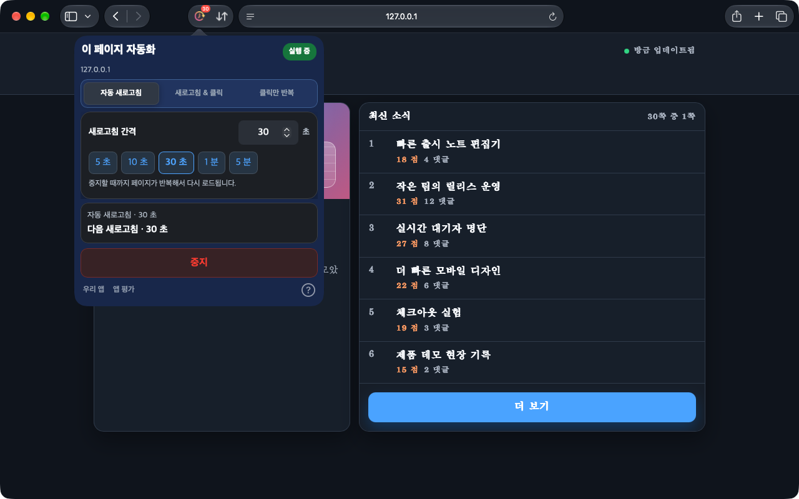
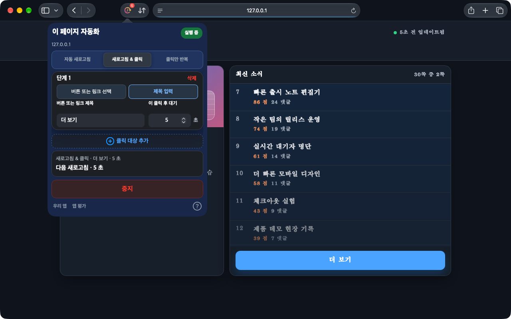
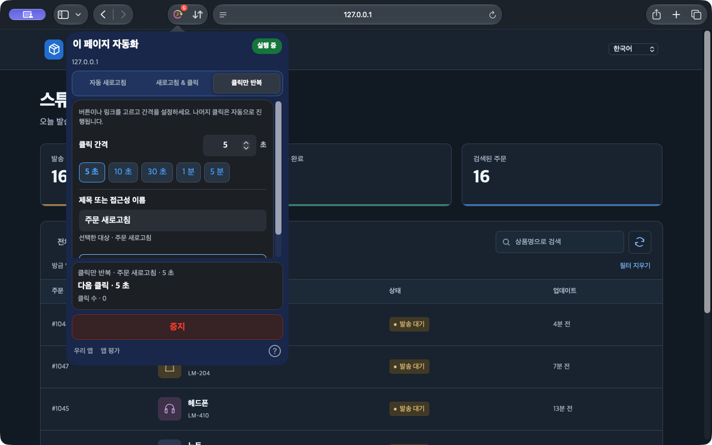

자동 새로고침
기본 시간이나 정확한 간격을 지정해 대시보드, 재고, 상태 페이지를 최신으로 유지하세요.
자동 새로고침 설정하기iPhone, iPad, Mac의 Safari와 데스크톱 Chrome에서 사용하세요.
페이지 전체를 새로고침할 때도, 버튼 하나만 누르면 될 때도 있죠. Auto Refresh & Clicker가 Safari 웹페이지의 반복 작업을 도와드립니다.
브라우저 안에서 실행. 계정 가입 불필요.
Safari 버전에서 아이콘 버튼 선택과 페이지 새로고침 없는 반복 클릭을 사용할 수 있습니다. Chrome 버전은 별도로 업데이트되므로 지원 기능은 해당 스토어에서 확인해 주세요.
작동 방식 보기


Mac의 Safari 1.10.0 · 로컬 데모 페이지의 실제 화면
계속 바뀌는 대시보드부터 반복해서 누르는 버튼까지, 페이지에 맞는 작업을 선택하세요.
기본 시간이나 정확한 간격을 지정해 대시보드, 재고, 상태 페이지를 최신으로 유지하세요.
자동 새로고침 설정하기페이지에서 버튼이나 링크를 선택하거나 제목을 입력하세요. 새로고침 후 정한 순서와 대기 시간대로 클릭합니다.
새로고침 후 클릭 설정하기페이지를 다시 불러오지 않고 클릭만 반복하세요. 아이콘 버튼도 고를 수 있어 목록을 업데이트하기 편합니다.
반복 클릭 설정하기간단하게 설정하고 실행 상태를 확인하세요.
설치 후 앱을 열고 Safari 설정에서 확장 프로그램과 대상 사이트 접근을 허용하세요.
모드를 고르고 간격이나 단계별 대기 시간을 설정하세요. 클릭할 버튼이나 링크는 페이지에서 선택하거나 제목을 입력할 수 있습니다.
시작 후 실행 상태와 카운트다운을 확인하세요. 언제든 중지하거나 변경 사항을 적용할 수 있습니다.
웹 계정이 필요 없습니다. 설정은 브라우저에 로컬로 저장되며 탭마다 작업을 따로 관리합니다.
iPhone과 iPad에서는 Safari를 전면에 유지하세요. 백그라운드나 잠금 상태에서는 시스템이 작업을 일시 중지할 수 있습니다.
개인정보Safari 웹페이지 또는 데스크톱 Chrome 확장 프로그램에서 실행됩니다. 다른 앱이나 시스템 화면을 조작하지 않습니다.
설치된 앱을 한 번 연 뒤 Safari 설정 → 확장 프로그램을 확인하세요. Safari 15.4 이상을 사용해 주세요. 계속 표시되지 않으면 macOS, Safari, 앱 버전과 설치 출처를 지원팀에 알려주세요.
지속적인 백그라운드 실행은 보장되지 않습니다. iOS와 iPadOS가 브라우저 작업을 일시 중지할 수 있으므로 Safari를 전면에 유지하세요.
현재 Safari 버전에서는 설정을 편집한 뒤 변경 사항을 적용할 수 있습니다. 요약에 현재 설정이 표시되며 중지를 누르면 종료됩니다.
iPhone, iPad, Mac의 Safari와 데스크톱 Chrome에서 사용하세요.
현재 가격과 호환성은 각 스토어에서 확인하세요.